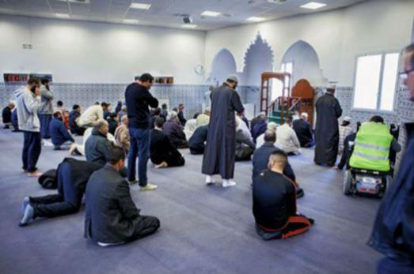
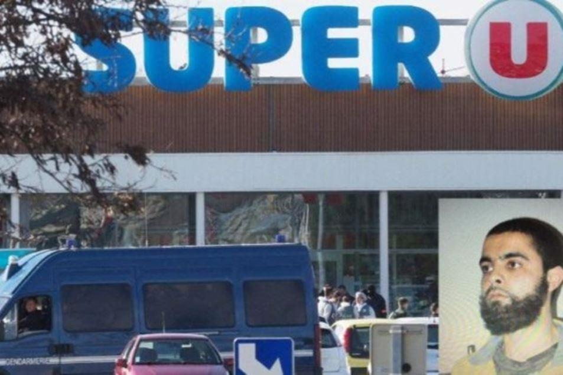

« Le monde est dangereux à vivre non pas tant à cause de ceux qui font le mal, mais à cause de ceux qui regardent et laissent faire » (Albert Einstein)
Au lendemain d’un nouvel acte de terrorisme en France, notre ami José Castano nous rappelle le besoin vital de rester vigilant et s’interroge par ailleurs sur l’adage « qui ne dit mot consent »…
De tout temps, les minorités agissantes -encouragées par la bien-pensance (elle-même enfantée par la dictature du « politiquement-correct ») - ont toujours supplanté les majorités pacifiques et silencieuses, notamment dans les domaines politico-ethnico-religieux.
S’agissant de ce mal allant en s'aggravant qui ronge aujourd’hui notre société -à savoir le fondamentalisme islamique - d’aucuns, inconséquemment (ou idiotement), prétendent que ses adeptes ne sauraient être dangereux pour la paix du monde car « minoritaires ». Et quand on pointe du doigt tel ou tel acte barbare perpétré par ces mêmes fanatiques, la réponse fuse tel un leitmotiv : « Pas d’amalgame ! »… « Ils ne sont pas tous pareils ! ». Certes ! Mais que fait alors cette majorité dite pacifique pour empêcher que se perpètrent et se perpétuent tant de crimes atroces ? « La perversion de la cité commence par la fraude des mots » soutenait Platon...
Il ne se passe un jour sans que l’actualité nous rapporte les exactions des « fous d’Allah » diffusant à travers le monde leur religion de « paix et d’amour » basée sur des supplices, égorgements, assassinats, rapts, lapidations, mutilations, viols, ce que préconise la charia… sans que la majorité pacifique des Musulmans ne réagisse.
Pour ne citer que la France, de plus en plus de zones urbaines sont la proie des délinquants en tout genre, djihadistes, voyous et terroristes en herbe qui, assurés de leur impunité, sèment la terreur, multipliant sous n’importe quel prétexte les affrontements avec les forces de l’ordre, exprimant à cette occasion une haine et un racisme violents anti-français, anti-chrétien et anti-juif… sans que la majorité pacifique des Musulmans ne réagisse.
Il ne se passe un jour sans que les médias -pourtant d’ordinaire discrets et frileux- ne parlent d’insécurité, de violences, de délinquance… Aujourd’hui, les bandes font la loi dans les cités qui sont devenues de véritables zones de non-droit. Les « jeunes », issus principalement de l’immigration arabo-africaine, se livrent à des batailles rangées dignes des plus violents polars. Les actes de guerre, les règlements de compte, les émeutes, les voitures qui flambent, les dégradations d’équipements collectifs, celles des immeubles, des transports en commun, le vandalisme, les incivilités, le bruit, les cambriolages, le racket, le trafic d’armes et de stupéfiants, la multiplication des femmes voilées portant le niqab (plus par signe de provocation que par ferveur religieuse) et d’hommes porteurs de djellabas, l’intégrisme religieux en progression constante, sont monnaie courante et renforcent le sentiment d’insécurité des habitants de ces quartiers… sans que la majorité pacifique des Musulmans ne réagisse… rendant actuels ces vers de Théophile de Viau dans son « Elégie » : « Dans ce climat barbare où le destin me range, me rendant mon pays comme un pays étrange… »
Et pendant ce temps, la contagion du fanatisme s’amplifie et se répand à travers tout le pays… « Vous êtes dans la fabrique à terroristes, ici, sachez-le. Dans les caves des HLM de Clichy, on vend des armes comme je vous vends des aspirines » relatait dans une désespérance extrême un pharmacien de Montfermeil au lendemain des attentats de « Charlie Hebdo »… Depuis lors, aucune leçon n’a été tirée…
Certes, il est facile d’arguer que « les Musulmans ne sont pas tous pareils »… « ne sont pas tous mauvais » ; je le concède volontiers… Seulement quand Dalil Boubakeur, recteur de la Mosquée de Paris, déclare : « Je suis extrêmement inquiet de voir la rancœur contre l’islam […] alors que ce sont les musulmans radicaux qui sont en cause », je veux bien admettre qu’il existe un islam « modéré », « laïc », mais, dans les faits, la réalité, hélas, est imparable. Depuis les attaques du 11 septembre 2001 sur les tours jumelles du World Trade Center, en 15 ans, près de 29 000 attentats terroristes mortels ont été perpétrés par des musulmans de par le monde. L’islamisme ne se cache plus et affiche clairement ses ambitions hégémoniques sur le monde occidental qu’il entend soumettre. « Il n’y a pas un islam modéré et un islam violent ; l’islam, c’est l’islam ! », avait déclaré le président turc, Recep Tayyip Erdogan, en 2007.
Alors que, le 18 novembre 2015, cinq jours après les 130 morts et 352 blessés de Paris, le président de l’Assemblée Nationale, Claude Bartolone, pérore sans complexe : « Il ne faut pas qu’on établisse de lien entre les classes populaires, les banlieues populaires et ces terroristes qui n’ont rien à voir avec ces populations qui n’aspirent qu’à vivre normalement », la corrélation entre les zones de non-droit et la barbarie islamiste s’avère évidente…
« Pas d’amalgame ! » répètent-ils à l’envi… La volonté de dissocier à tout prix ces actes barbares, monstrueux ou simplement ignominieux de la « religion de paix et d’amour » finit par être une insulte à notre réflexion personnelle car si tous les musulmans ne sont pas terroristes, jusqu'à preuve du contraire, tous les terroristes sont musulmans… et tous ont crié « Allah Akbar » avant de perpétrer leurs crimes ! Et pourtant, ils disent que Daech n’est pas l’islam ! Qu’attendent-ils alors de le prouver sur le terrain et nous épargner leurs jacasseries infâmes ?
Quand on a une once d’humanité en soi et de raison, on ne se fait jamais l’avocat de l’islam et ces mots du grand voyageur que fut Marco Polo, prononcés en janvier 1300, le confirment et nous ramènent à la triste réalité : « Le musulman militant est celui qui coupe les têtes pendant que le musulman modéré tient les pieds de la victime ». Edifiant constat !...
Il est clair cependant que la majorité musulmane ne se reconnaît pas dans l’image de frayeur et de terreur que véhiculent tant les « fous d’Allah » que les voyous et les truands de nos cités, mais que signifie le silence de cette majorité pacifique, cette passivité, cette inconséquence (voire, cette tolérance) vis-à-vis de la minorité radicalisée ou adepte de la voyoucratie et du banditisme ? Elle ne se considère en aucun cas concernée et se contente simplement de regarder et de laisser faire… « Tolérance et apathie sont les dernières vertus d'une société mourante » clamait Aristote…
Ainsi, jamais les voix de cet Islam « modéré » ne s’élèvent pour dénoncer tant de barbarie, jamais la moindre pétition pour crier : « Pas en notre nom ! Pas au nom de l’Islam ! »… « NON à la haine ! » Mais quelle est donc cette incapacité arabe à porter un regard critique sur tant de misère humaine ?... Que signifie ce silence affiché par la communauté islamique à l’égard de la racaille radicalisée qui sévit en toute impunité dans les cités ? Les « bonnes âmes », les « humanistes à la conscience pure », prétendent que cette omerta est la conséquence de la peur et de la crainte des représailles que ressentent les habitants de ces quartiers. Si cela est vrai pour certains, pour d’autres, c’est la solidarité qui s’exprime et rien d’autre. Cependant, si les « terrorisés » persistent dans leur silence en s’abstenant publiquement de se désolidariser de la racaille et des terroristes qu’elle engendre, ils leur rendent également hommage en leur montrant leur soumission (1).
Et c’est ainsi que la communauté musulmane, dans sa résignation millénaire, continue -encouragée en cela par la « bien-pensance », le « politiquement correct » et les « moralistes » - d’observer, indolemment, la minorité agissante et ultra-violente (fer de lance de la 5ème colonne) s’érigeant en toute impunité -au nom de Dieu ! - en « seigneurs des banlieues ». Et bientôt, à l’instar de Diderot, nous pourrons nous écrier : « Il n’y a plus de patrie ; je ne vois d’un pôle à l’autre que des tyrans et des esclaves ».
J.C.
Note :
(1) Recteur de la grande mosquée de Paris depuis 1992 et ancien président du Conseil français du culte musulman (CFCM), Dalil Boubakeur « a brillé par son absence dans les rassemblements organisés devant le Bataclan ou à la République », révèle le Canard enchaîné. La Grande Mosquée a attendu jusqu'à mardi 17 pour réagir et appeler les citoyens de confession musulmane à se rassembler contre le terrorisme. Mais nouveau coup de théâtre : 48 heures plus tard, Dalil Boubakeur annule tout, affirme le journal satirique. « En réalité, il n’a jamais voulu de ce rassemblement et il a tout fait pour qu’il n’ait pas lieu », a souligné un de ses proches, interrogé par la rédaction.

Partager cette page